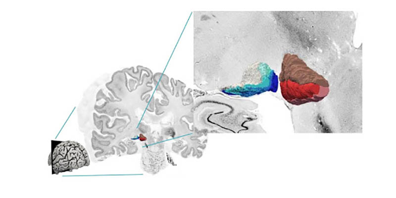

Featured Paper
Cellular structure of the human metathalamus revealed in novel 3D map
A new, high-resolution 3D map of a previously unmapped area of the brain has been reconstructed by a team of HIBALL researchers as part of the Human Brain Project (HBP). The German-based group developed a cytoarchitectonic map (a map of the cellular structure of the brain, down to the individual neurons) of the metathalamus, an area involved in processing audiovisual information. They incorporated the new reconstruction into the Julich Brain Atlas, which is easily accessible to anyone via the EBRAINS infrastructure.
The human metathalamus is extremely important for relaying auditory and visual signals to the rest of the brain. However, a detailed, three-dimensional map of the cellular structure of the area was still missing. Using the BigBrain dataset, the researchers focused on the two distinct parts of the metathalamus: the medial geniculate body (MGB) with its subdivisions; and lateral geniculate body (LGB) with its six layers.
In our Feautured Project video Andrea Brandstetter of the Institute of Neuroscience and Medicine, Forschungszentrum Jülich, explains “The BigBrain dataset helps us to understand the structure of complex subcortical nuclei”. "Novel deep-learning-based approaches are used to learn about the topography and the cellular architecture of the metathalamus” continues Kai Kiwitz of the Cécile and Oskar Vogt Institute of Brain Research, University Hospital Düsseldorf.
The new 3D maps are freely available online as part of the EBRAINS Atlas; you can navigate them here. “This way they can be used by the scientific community to bridge the microscale histology of BigBrain with functional measurements” explains Kiwitz. In addition to expanding our knowledge of the brain structure, the maps also have clinical relevance: many neurological disorders and dysfunctions involve the metathalamus, and highly detailed information regarding these structures could be used in conjunction with neuroimaging to better inform diagnosis and aid neurosurgery and deep brain stimulation.
The study was funded by the Human Brain Project, the Helmholtz International BigBrain Analytics and Learning Laboratory (HIBALL), the German Federal Ministry of Education and Research and the Max Planck Society for the Advancement of Science. Computing time was provided by the Jülich Supercomputing Centre.
Read the full papers
- Cytoarchitectonic Maps of the Human Metathalamus in 3D Space, by Kai Kiwitz, Andrea Brandstetter, Christian Schiffer, Sebastian Bludau, Hartmut Mohlberg, Mona Omidyeganeh, Philippe Massicotte and Katrin Amunts
- Deep Learning-Supported Cytoarchitectonic Mapping of the Human Lateral Geniculate Body in the BigBrain, by Andrea Brandstetter, Najoua Bolakhrif, Christian Schiffer, Timo Dickscheid, Hartmut Mohlberg and Katrin Amunts

High-resolution 3D reconstruction of the two metathalamic structures: six layers of the lateral geniculate body (left) and three subdivisions of the medial geniculate body (right) in the BigBrain dataset (adapted from [https://doi.org/10.3389/fnana.2022.837485][ Cytoarchitectonic Maps of the Human Metathalamus in 3D Space])
Creative Commons Attribution License (CC BY).